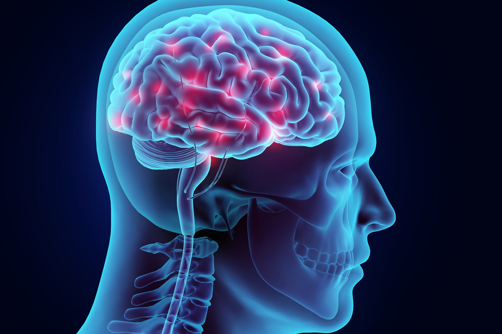

MyHealth
Brain Disorders

What are brain disorders?
Brain is the body’s control center. It’s part of the nervous system, which also includes the spinal cord and a large network of nerves and neurons. Together, the nervous system controls everything from your senses to the muscles throughout your body.
When the brain is damaged, it can affect many different things, including your memory, your sensation, and even your personality. Brain disorders include any conditions or disabilities that affect your brain. This includes conditions that are caused by:
Illness Genetics Traumatic injury
This is a broad category of disorders, which vary greatly in symptoms and severity. Keep reading to learn about some of the largest categories of brain disorders.
There are different types of brain disorders..
Brain Injuries
Brain injuries are often caused by blunt trauma. Trauma can damage brain tissue, neurons, and nerves. This damage affects your brain’s ability to communicate with the rest of your body. Examples of brain injuries include:
Brain Tumors
Sometimes, tumors form in the brain and can be very dangerous. These are called primary brain tumors. In other cases, cancer somewhere else in your body spreads to your brain. These are called secondary or metastatic brain tumors.
Mental Disorders
Mental disorders, or mental illnesses, are a large and diverse group of conditions that affect your behavior patterns.
Symptoms of brain disorders are:
Changes in hearing, speech or vision Paralysis – partial or complete Seizures Poor balance or dizziness Headaches Nausea and vomiting Shakes and tremors
Treatments/Medications
Treatments depend on the condition and its causes, but can include any combination of the following:
Medication Surgery Physical therapy Gene therapy Occupational therapy Lifestyle modifications
There are some risk factors for Brain Disorders
Brain disorders can affect anyone. Risk factors are different for different types of brain disorders.
Risk of Brain disorders be higher if you:-
have a family history of mental illness have or have had traumatic or stressful life experiences have a history of misusing alcohol or drugs have or have had a traumatic brain injury
Can suffer from some form of bone or joint pain in our lives.MyHealth website and book your Appointment .
Show Less
Show More